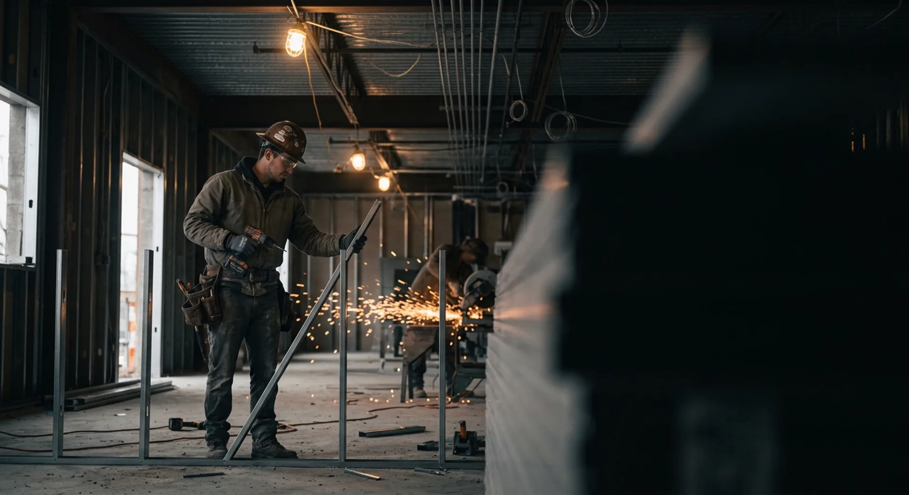
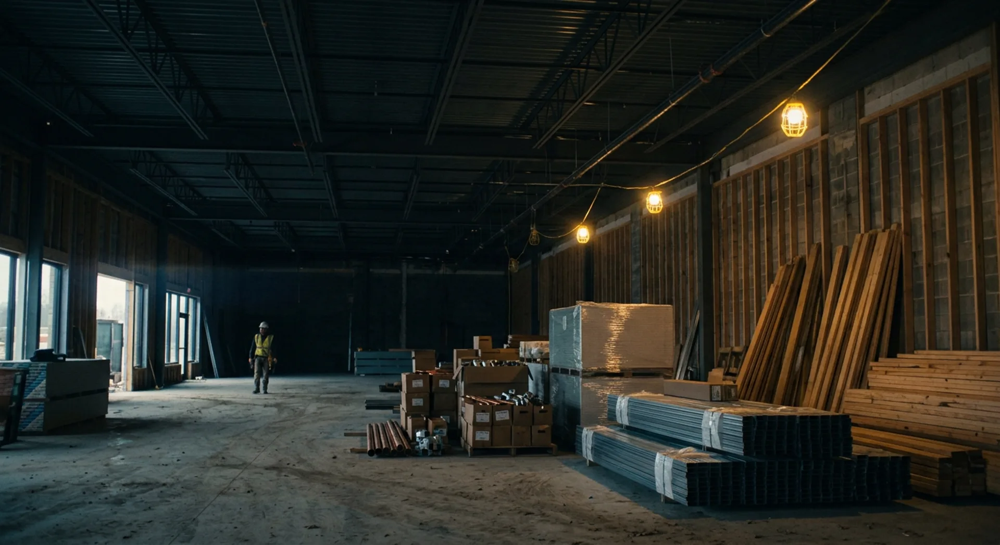
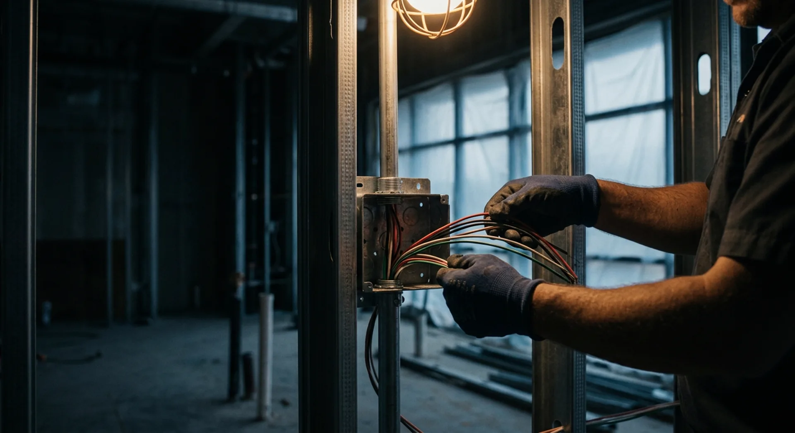
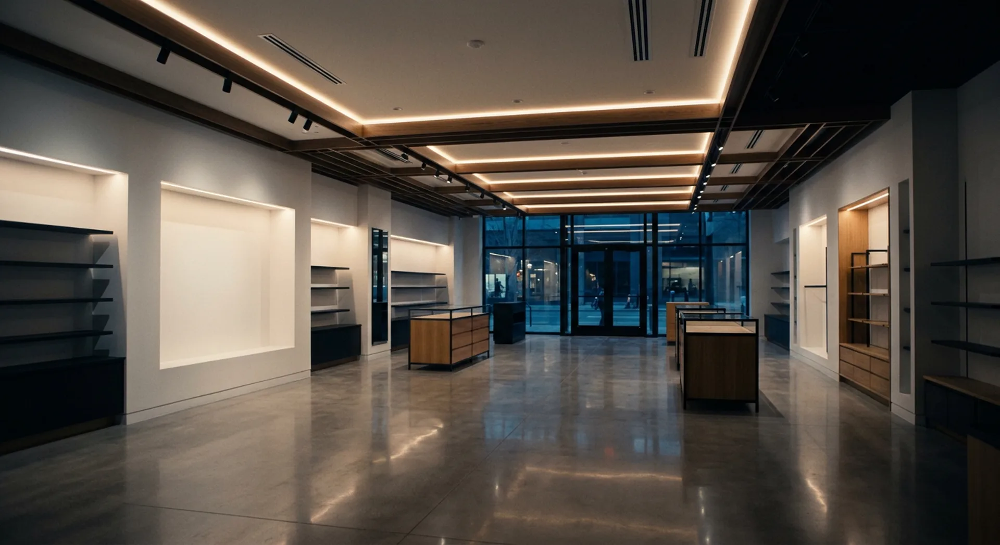

Phase 01
Framing
Steel studs and structural headers define every room, every corridor, every sightline. The skeleton of the space takes shape.
Delivered on schedule
From architectural drawings to finished retail floors. 44 years of building the spaces where business happens.
Steel beams, lumber stacks, concrete, glass. Before a single wall goes up, every component is staged, verified, and sequenced. The build is won or lost in logistics.

Three phases. Weeks of work compressed into a scroll. Framing goes up, systems thread through, surfaces close in.

Steel studs and structural headers define every room, every corridor, every sightline. The skeleton of the space takes shape.

Electrical, HVAC, plumbing, fire suppression. Everything that has to be right before the walls close. No second chances.
Drywall, tape, mud, paint. The raw structure disappears behind finished surfaces. The space starts to look like what it will become.

The space is finished. 44 years of building — and this is the moment every project points at.